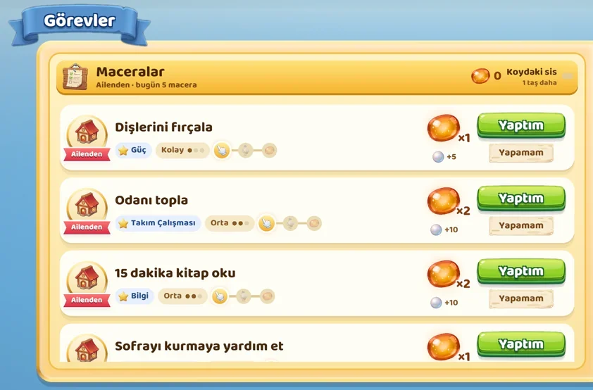
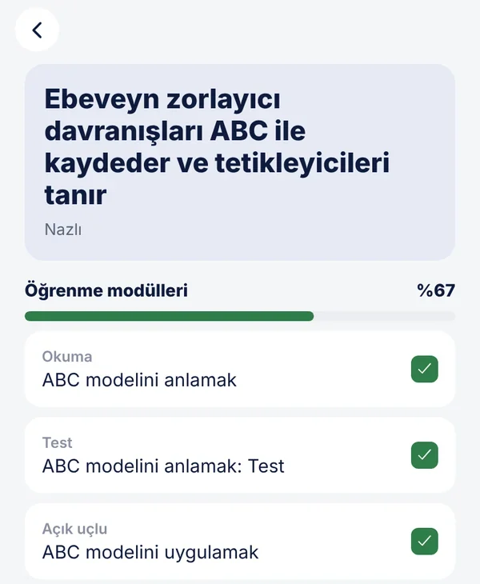
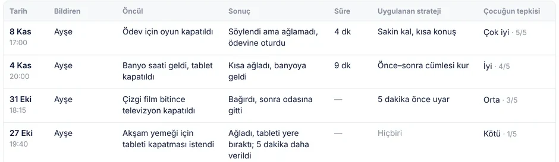
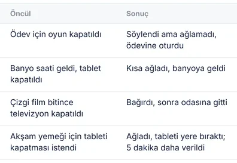

Rutin güne düzen versin, kayıt neyin işe yaradığını göstersin
Moyo; çocuk, ebeveyn ve uzman için birbirine bağlı üç uygulamadan oluşan bir yazılım aracıdır.
Bir sağlık hizmeti değildir: tanı koymaz, tedavi yerine geçmez.
Kim ne yapar, dayandığımız araştırmalar
Çocuk: Moyo Oyun
Rutinin adımını gerçek hayatta yapar, oyunda işaretler.

Araştırmalar Düzenli aile rutinleri çocukların uyumu ve öz düzenlemesiyle ilişkili bulunmuş [1, 2]; ebeveyn programlarında övgü gibi olumlu pekiştirme, daha güçlü etkiyle ilişkilendirilen ögeler arasında [3].
“Yaptım” onaya gelir
Ebeveyn: Moyo Ebeveyn
Rutini planlar, adımı onaylar, zor anı kaydeder; kısa eğitimleri okur.

Araştırmalar Davranışsal ebeveyn eğitimi programları çocuklardaki davranış sorunlarını azaltmada ve ebeveynlik becerilerini güçlendirmede etkili bulunmuş [4]; internet üzerinden sunulan programlarda da olumlu etkiler bildirilmiş [5].
Ebeveyn onaylarsa paylaşılır
Uzman: Moyo Uzman, İsteğe bağlı
Paylaşılan kayıtları okur, eğitim gönderir, rutin önerir.


Araştırmalar Terapi araştırmalarında görüşme dışındaki uygulamaya uyum daha iyi sonuçlarla ilişkili bulunmuş [6]; olanı o anda kaydetmek, sonradan hatırlamanın yanılgılarını azaltmak için geliştirilmiş bir yöntem [7].
Öneriyi ebeveyn ekler
Düzen ve kayıt
Bu çalışmalar yöntemler hakkındadır; Moyo'nun kendisi araştırılmadı.
Kaynaklar (7)
Bu sayfada anılan çalışmalar. Bağlantılar yayıncının ya da PubMed'in sayfasını yeni sekmede açar.
Fiese, B. H., Tomcho, T. J., Douglas, M., Josephs, K., Poltrock, S., & Baker, T. (2002). A review of 50 years of research on naturally occurring family routines and rituals: Cause for celebration? Journal of Family Psychology, 16(4), 381–390. https://doi.org/10.1037/0893-3200.16.4.381 · PubMed 12561283
Selman, S. B., & Dilworth-Bart, J. E. (2024). Routines and child development: A systematic review. Journal of Family Theory & Review.https://doi.org/10.1111/jftr.12549
Leijten, P., Gardner, F., Melendez-Torres, G. J., van Aar, J., Hutchings, J., Schulz, S., Knerr, W., & Overbeek, G. (2019). Meta-analyses: Key parenting program components for disruptive child behavior. Journal of the American Academy of Child & Adolescent Psychiatry, 58(2), 180–190. https://doi.org/10.1016/j.jaac.2018.07.900 · PubMed 30738545
Furlong, M., McGilloway, S., Bywater, T., Hutchings, J., Smith, S. M., & Donnelly, M. (2012). Behavioural and cognitive-behavioural group-based parenting programmes for early-onset conduct problems in children aged 3 to 12 years. Cochrane Database of Systematic Reviews, (2), CD008225. https://doi.org/10.1002/14651858.CD008225.pub2 · PubMed 22336837
Thongseiratch, T., Leijten, P., & Melendez-Torres, G. J. (2020). Online parent programs for children's behavioral problems: A meta-analytic review. European Child & Adolescent Psychiatry, 29(11), 1555–1568. https://doi.org/10.1007/s00787-020-01472-0 · PubMed 31925545
Mausbach, B. T., Moore, R., Roesch, S., Cardenas, V., & Patterson, T. L. (2010). The relationship between homework compliance and therapy outcomes: An updated meta-analysis. Cognitive Therapy and Research, 34(5), 429–438. https://doi.org/10.1007/s10608-010-9297-z · PubMed 20930925
Bir uzmanla çalışılıyorsa görüşme haftada bir saat kadardır; sabahlar, ödevler ve akşamlar evde geçer.
Rutinleri her gün aynı biçimde sürdürmek, zor bir anda ne olduğunu ve neyin denendiğini sonradan hatırlamak kolay değildir. Uzman da evde olanı çoğunlukla ebeveynin hatırladığı kadarıyla öğrenir.
Moyo'yu bunun için yaptık: evde olan o gün kayda geçsin, dilerseniz uzmanınızla paylaşılsın.
Pzt
Sal
Çar1 saat
Per
Cum
Cmt
Paz
Rutin adımları her gün, evde
Zor anlar bazı günler
Uzmanla görüşme varsa, haftada bir
Önizleme notu
Ekip ve hikâyemiz
Bu bölüm yalnızca önizlemede görünür, canlıya taşınmaz. Benzer ürünlerin Hakkımızda sayfalarında kim olduğumuzu ve nasıl başladığımızı anlatan bir bölüm var. Bunun için sizden gerekenler:
Şirketin unvanı ve bulunduğu şehir
Kurucular ya da ekip: ad ve rol (kişinin izniyle; fotoğraf isteğe bağlı)
Moyo'nun nasıl başladığı: iki ya da üç cümle
Birlikte çalışılan uzman ya da danışmanlar (yalnızca yazılı izinle)
Kuruluş yılı (isteğe bağlı) ve iletişim e-postası
İletişim
Sorunuz, öneriniz ya da bildirmek istediğiniz bir sorun varsa destek formundan bize yazın; yanıtı e-postayla veririz.
 Çocuk: Moyo Oyun
Çocuk: Moyo Oyun